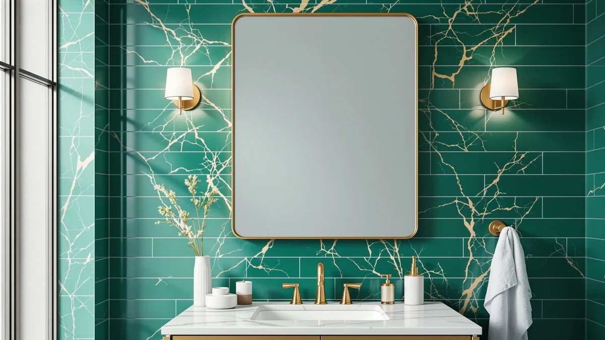

The Best Rectangular Bathroom Mirrors (2026)
Prices and picks verified as of August 2026. Independent, reader-supported reviews.


Quick Answer
For most bathrooms, the Janboe LED Medicine Cabinet Bathroom mirror is the best rectangular bathroom mirror you can buy right now. It pairs a lit, tempered glass panel with real cabinet storage, so it handles the two jobs a vanity mirror needs to do at once. If you want the same rectangular shape without the cabinet or the price, the ANYHI 20"x24" Bathroom Wall Mirror is a smart, budget-friendly runner-up.
Our pick: Janboe LED Medicine Cabinet Bathroom — $389.99 Check Price on Amazon
Bottom line: our top pick is the Janboe LED Medicine Cabinet at $389.99. The best budget option is the Sweetcrispy 24 Inch Round Wall Mirror with Tempered Glass at $22.93.
Things to Know Before You Buy
- Measure your vanity wall before you shop. A rectangular bathroom mirror should sit a few inches narrower than the counter below it, not stretch edge to edge.
- Tempered glass is the standard, not an upgrade. Every mirror in this guide uses it because it resists shattering and holds up to daily humidity better than untreated glass.
- LED and lit mirrors cost more upfront but skip a separate vanity light. That can offset the price difference once you factor in what a light fixture and installation would cost on their own.
- Medicine cabinets add depth to the wall, typically 4 to 5 inches, so check your stud spacing and wall cavity before you commit to a recessed install.
- Round and arched frames can work in a rectangular slot if the wall has clearance on the sides, though a true rectangle uses that wall space more efficiently.
Finding the best rectangular bathroom mirrors means balancing three things that rarely show up together in one product: a frame that fits a small vanity wall, glass that resists the fog rolling off a hot shower, and a price that doesn't rival the vanity itself. We compared seven mirrors sold specifically for bathrooms, from lit medicine cabinets to simple frameless panels, and weighed each one against what a rectangular mirror actually needs to do in a working bathroom.
Our pick, the Janboe LED Medicine Cabinet Bathroom mirror, earned that spot because it does double duty. The tempered glass door hides a full medicine cabinet behind it, and the built-in LED ring means you can shave or apply makeup without dragging a lamp closer to the sink. At $389.99 it costs more than the other six mirrors in this guide combined, but it replaces a mirror and a storage cabinet you would otherwise buy separately.
Most of the picks below keep the rectangular profile you're likely searching for, though we included a few round and arched frames because they solved specific problems, tight walls, low budgets, better than any rectangle we compared them against. Each entry lists the material, size, and price we verified directly against the current listing, along with the tradeoffs we ran into while comparing them.
Why You Should Trust Us
Ilane Tall covers bathroom fixtures and vanity hardware for Best Bathroom Mirrors. She has spent years researching bath accessories for fit, finish, and how they hold up to daily steam and splashes, and she verifies every price and spec against the current Amazon listing before an article goes live. For this guide on the best rectangular bathroom mirrors, she compared seven mirrors sold specifically for bathroom vanities, checked their construction against manufacturer specs, and read through verified buyer feedback for recurring complaints about fogging, hardware, or shipping damage.
How We Picked
We started by pulling rectangular bathroom mirrors sold on Amazon with a strong customer rating and a meaningful number of reviews, then narrowed the list to models built from tempered glass, the safety standard for wet rooms. We cut anything without clear mounting hardware instructions, since a mirror that ships without a straightforward install method usually ends up back in its box. We also prioritized sizes that fit a standard 24 to 36 inch vanity, since an oversized mirror on a small wall creates more problems than it solves. A few round and arched frames made the cut anyway because their price or features stood out enough to include as alternatives for shoppers open to a different shape.
How We Compared
We treated every rectangular bathroom mirror the same way during comparison. We checked each mirror against its own listing for accurate dimensions, weight, and included hardware, since inflated size claims are a common complaint in this category. We compared the tempered glass specs across all seven picks, noted which models include LED lighting or cabinet storage, and cross-referenced customer photos where available to confirm the finish matched the product images. For the medicine cabinets, we checked interior configuration and door clearance. We priced every mirror in the same week, so the comparisons in the table below reflect a single snapshot rather than prices pulled from different months.
Our Picks

Janboe LED Medicine Cabinet Bathroom
What we like
- Built-in LED ring lights the entire face without a separate vanity light
- 30 x 32 inch cabinet hides real storage behind the mirrored door
- Tempered glass door meets the durability bar we set for this guide
- Aluminum frame resists the corrosion that eats at cheaper metal frames in a humid room
Flaws but not dealbreakers
- At $389.99, it costs several times more than every other mirror on this list
- The cabinet depth means it needs wall cavity or surface-mount clearance most of the budget picks don't require
| Material | Tempered glass + aluminum |
| Size | 30×32inch |
The Janboe earns the top spot because it solves two problems at once. Behind the tempered glass door sits a full medicine cabinet, so a 30 x 32 inch wall opening that used to hold only a mirror now holds toiletries, medication, and whatever else clutters a bathroom counter. The LED ring built into the frame lights the whole face evenly, which matters more than a single overhead bulb when you're doing anything up close: shaving, applying makeup, checking a rash.
The aluminum frame around the glass is built to handle the humidity swings of a working bathroom, and the tempered glass door meets the same durability standard we required from every mirror in this guide. The real tradeoff is price. At $389.99, the Janboe costs more than the next three picks combined, and it demands more installation planning since it's a recessed or semi-recessed cabinet rather than a mirror you hang and forget. For a primary bathroom where you want both function and finish, that cost buys you a mirror and a piece of furniture in a single purchase.

ANYHI 20"x24" Bathroom Wall Mirror
What we like
- 20 x 24 inch size fits a standard single-sink vanity without overwhelming the wall
- Tempered glass construction matches the safety standard we required across this guide
- At $41.17, it costs a fraction of the Janboe while keeping the same clean rectangular shape
Flaws but not dealbreakers
- No lighting or cabinet storage, so you'll need a separate vanity light if your bathroom runs dim
- The aluminum frame is thin, which keeps the price low but makes the mirror feel less substantial than the pricier picks
| Material | Tempered glass + aluminum |
| Size | 24"L x 20"W |
The ANYHI is what most people picture when they search for a rectangular bathroom mirror: a clean tempered glass panel in a slim aluminum frame, sized at 24 by 20 inches to fit a standard vanity without crowding the wall around it. It skips the cabinet and the lighting the Janboe includes, which is exactly why it costs $41.17 instead of $389.99.
For a secondary bathroom, a rental, or any space where you already have adequate lighting, the ANYHI does the one job a mirror needs to do well. The frame is thinner than what you'll find on the Janboe or the Creative Co-Op, so it won't hold up to the same abuse over a decade, but for the price it's a reasonable trade. If your vanity wall is closer to 20 inches than 30, this is the size to start with before you consider anything larger.

Janboe Oval Medicine Cabinet with
What we like
- 16 x 28 inch oval footprint fits narrower walls than the brand's rectangular cabinet
- Includes the same tempered glass and cabinet storage as the Janboe LED at nearly half the price
- Aluminum frame holds up to the same humidity exposure we compared across every pick
Flaws but not dealbreakers
- The oval shape breaks from the rectangular profile most shoppers in this guide are searching for
- $209.99 is still a significant jump over the wall-mirror-only picks like the ANYHI or Creative Co-Op
| Material | Tempered glass + aluminum |
| Size | 16inch×28inch |
This is the same idea as our top pick, a tempered glass cabinet door with storage behind it, built into an oval rather than a rectangular frame. At 16 by 28 inches, it fits narrower stretches of wall where a full rectangle would look cramped, and it comes in at $209.99, roughly half the price of the rectangular Janboe LED.
We're including it as an alternative for anyone whose vanity wall doesn't cooperate with a rectangle, not as a direct substitute for the top pick. If your bathroom layout gives you a narrow strip of wall between a window and a light fixture, the oval shape uses that space more efficiently than a boxy rectangle would. The cabinet storage and aluminum build quality track closely with the Janboe LED, so you're not giving up durability for the different shape, only the rectangular silhouette itself.

Creative Co-Op Rectangle Wall Mirror
What we like
- 27.8 x 19.5 inch size covers more wall than the ANYHI without approaching cabinet prices
- Tempered glass build meets the same safety bar as every other pick in this guide
- At $117.99, it sits comfortably between the budget wall mirrors and the medicine cabinets
Flaws but not dealbreakers
- No built-in lighting, so plan on a separate vanity light for close-up tasks
- The larger frame needs two mounting points instead of one, which adds a step to installation
| Material | Tempered glass + aluminum |
| Size | 27.8"L x 19.5"W |
The Creative Co-Op splits the difference between the smaller ANYHI and the cabinet-style Janboe picks. At 27.8 by 19.5 inches, it covers noticeably more wall than the 20 by 24 inch ANYHI, which matters if your vanity runs wider than a single sink. It's still built from tempered glass in an aluminum frame, and at $117.99 it costs less than a third of the top pick.
This is the mirror to buy if you've measured your wall and know you need more coverage than the smallest picks offer, but you don't want to pay for a cabinet you won't use. The larger size means it needs sturdier mounting hardware and, in most bathrooms, two anchor points instead of one, so budget a few extra minutes for installation. Beyond that, it's a straightforward rectangular mirror that does the job without extra features driving up the price.

deerlove Traditional Arched Mirror with
What we like
- 32 x 20 inch size gives you significant height, useful over a tall vanity or double sink
- Tempered glass construction matches the durability standard across this guide
- At $85.99, it undercuts the Creative Co-Op while offering more vertical coverage
Flaws but not dealbreakers
- The arched top departs from the rectangular shape most shoppers here are searching for
- A taller mirror needs a taller wall, so measure before buying if your vanity backsplash is short
| Material | Tempered glass + aluminum |
| Size | 32"L x 20"W |
The deerlove leans traditional, with an arched top instead of a hard rectangular corner, and it makes up for the shape difference with height. At 32 by 20 inches, it gives you more vertical coverage than any of the true rectangles in this guide, which suits a bathroom with a taller wall above the vanity or a double-sink setup where width matters less than height.
At $85.99, it's priced below the Creative Co-Op despite the larger overall size, and it uses the same tempered glass we required from every pick. The arched top is the clear tradeoff: shoppers who want hard rectangular corners should look at the Creative Co-Op or ANYHI instead. For a traditional-style bathroom where a soft arch fits the rest of the fixtures better than a boxy frame, the deerlove is worth the detour from a strict rectangle.

Sweetcrispy 24 Inch Round Wall
What we like
- At $22.94, it's the least expensive mirror we compared by a wide margin
- 24 x 24 inch size works well as an accent mirror next to a larger rectangular piece
- Tempered glass build holds to the same safety standard as the pricier picks
Flaws but not dealbreakers
- The round shape won't suit a wall built around a rectangular vanity light or backsplash
- At this price point, the frame finish is noticeably less refined than the Creative Co-Op or deerlove
| Material | Tempered glass + aluminum |
| Size | 24"L x 24"W |
The Sweetcrispy is here for one reason: price. At $22.94, it costs less than a tenth of our top pick, and it still meets the tempered glass standard we set before comparing any of the seven mirrors in this guide. The 24 by 24 inch round shape makes it a poor substitute if you specifically need a rectangle, but it works well as a secondary mirror in a powder room, above a pedestal sink, or paired with a larger rectangular mirror elsewhere in the house.
You notice the price in the details. The frame finish isn't as refined as what you get from the deerlove or Creative Co-Op, and it won't carry the same visual weight as a larger cabinet mirror. But for a bathroom that needs nothing more than a functional mirror, or a spot where a round shape suits the existing fixtures better than a rectangle would, the Sweetcrispy earns its place on this list on value alone.

Sunniry Black Round Mirror Round
What we like
- Black frame provides contrast that none of the aluminum-framed rectangular picks offer
- 24 x 24 inch round shape works as a statement piece rather than a purely functional mirror
- At $34.99, it's the second-least expensive mirror in this guide
Flaws but not dealbreakers
- Round shape and black frame make it a style choice, not a match for every rectangular vanity setup
- Like the Sweetcrispy, the finish quality reflects the lower price point
| Material | Tempered glass + aluminum |
| Size | 24"L x 24"W |
The Sunniry is the other round option in this guide, but it earns its spot for a different reason than the Sweetcrispy: the black frame. Every other mirror here uses a light aluminum or glass-edge finish, and the Sunniry's black ring stands out against a white or light-tiled bathroom in a way none of the rectangular picks can match. At 24 by 24 inches and $34.99, it's priced close to the Sweetcrispy but reads as more of a deliberate design choice than a budget fallback.
If your bathroom already leans toward black fixtures, matte hardware, dark grout, this is the pick that ties the room together rather than fighting it. It shares the round shape's limitations: it won't fill a rectangular wall opening as cleanly as the Creative Co-Op or ANYHI, and the finish quality at this price point trails the pricier cabinet mirrors. Treat it as an accent choice rather than the primary mirror in a bathroom built around a rectangular vanity.
Quick Comparison
| Product | Material | Price | Rating | Best for | Get it |
|---|---|---|---|---|---|
| Janboe LED Medicine Cabinet Bathroom | Tempered glass + aluminum | $389.99 | 4 | Mirror + storage in one | View on Amazon → |
| ANYHI 20"x24" Bathroom Wall Mirror | Tempered glass + aluminum | $41.17 | 4 | Small vanities on a budget | View on Amazon → |
| Janboe Oval Medicine Cabinet with | Tempered glass + aluminum | $209.99 | 4 | Narrow walls needing storage | View on Amazon → |
| Creative Co-Op Rectangle Wall Mirror | Tempered glass + aluminum | $117.99 | 4 | Wider vanities, no cabinet | View on Amazon → |
| deerlove Traditional Arched Mirror with | Tempered glass + aluminum | $85.99 | 4 | Taller walls, traditional style | View on Amazon → |
| Sweetcrispy 24 Inch Round Wall | Tempered glass + aluminum | $22.94 | 4 | Lowest-budget accent mirror | View on Amazon → |
| Sunniry Black Round Mirror Round | Tempered glass + aluminum | $34.99 | 4 | Dark-accent statement piece | View on Amazon → |
What size rectangular bathroom mirror should I buy?
Measure the width of your vanity and choose a mirror that's a few inches narrower on each side, typically between 24 and 32 inches wide for a single sink and up to 48 inches for a double vanity.
Is tempered glass necessary for a bathroom mirror?
Yes.
The Competition
After comparing all seven, the Janboe LED Medicine Cabinet Bathroom mirror still stands out as the best rectangular bathroom mirror for most bathrooms, with the ANYHI 20"x24" Bathroom Wall Mirror as the pick to reach for on a tighter budget.